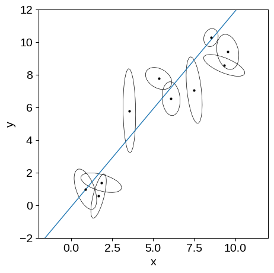
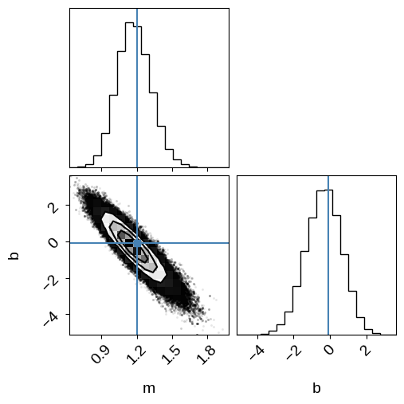
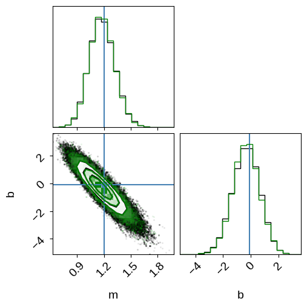
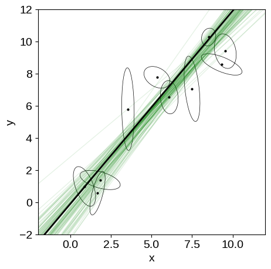
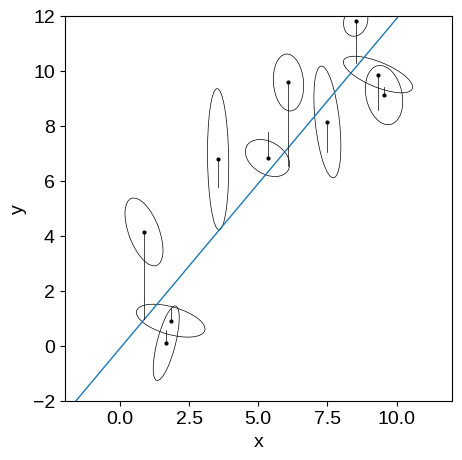
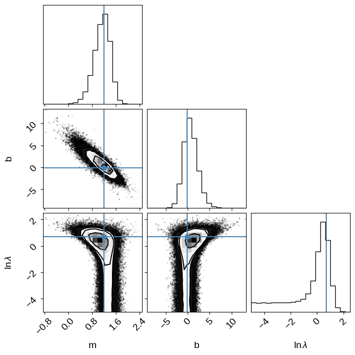
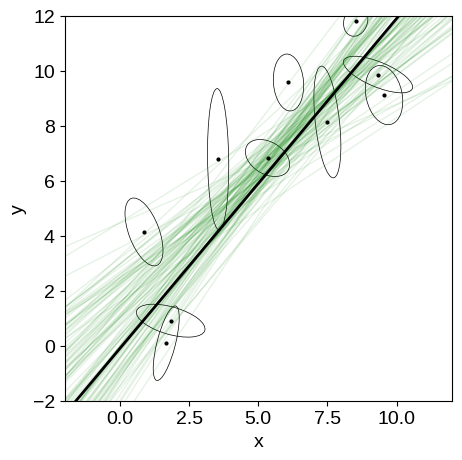
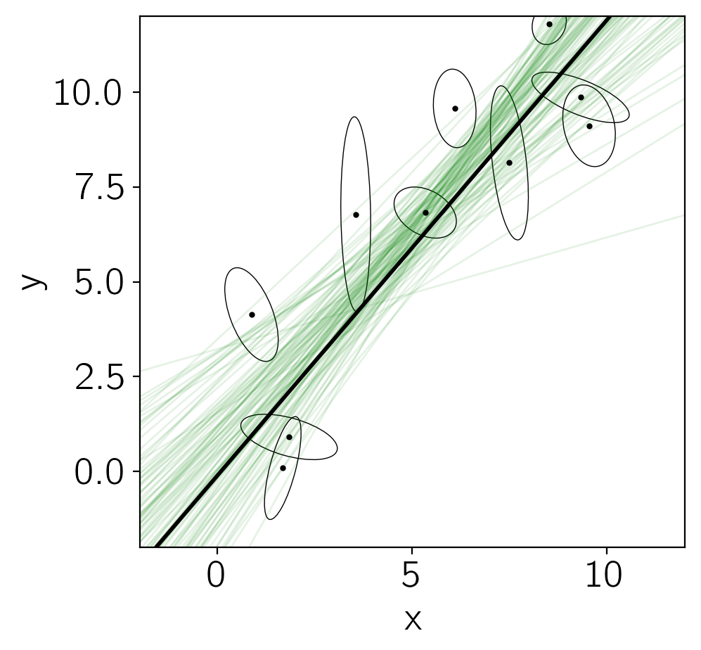
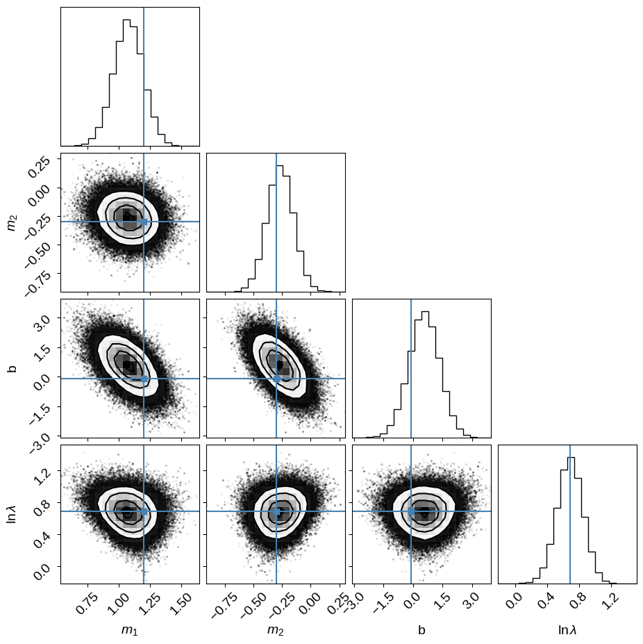

Fitting a plane to data
The source for this post can be found here. Please open an issue or pull request on that repository if you have questions, comments, or suggestions.
Who knew that it was possible to say more about how to fit a line to data? Recently, Megan Bedell asked about how to generalize the method described in section 7 of the bible for fitting a line to data with 2-dimensional error elipses to higher dimensional problems, and how to include intrinsic scatter in that relation. While the correct generalization might be obvious to some of you, I wanted to go through the full derivation to make sure that I knew what was going on. As a result, we discovered a mistake in the aforementioned paper (discussed in this GitHub issue — they are going to fix the mistake in an updated version of the paper) and I learned a few things about Gaussian integrals, so I wanted to post this here for posterity. I’ll start with a discussion of how to correct the method from Hogg, Bovy, & Lang (2010), then talk about including intrinsic scatter, and, finally, generalize to N dimensions. I’m sure that this is written somewhere else in the literature with different notation, but I never came across it so I thought that it might be worth writing it down.
To start, we’ll need a dataset to work with:
import numpy as np
import matplotlib.pyplot as plt
from matplotlib.patches import Ellipse
# Reproducible!
np.random.seed(42)
# A helper function to make the plots with error ellipses
def plot_error_ellipses(ax, X, S, color="k"):
for n in range(len(X)):
vals, vecs = np.linalg.eig(S[n])
theta = np.degrees(np.arctan2(*vecs[::-1, 0]))
w, h = 2 * np.sqrt(vals)
ell = Ellipse(xy=X[n], width=w, height=h, angle=theta, color=color, lw=0.5)
ell.set_facecolor("none")
ax.add_artist(ell)
ax.plot(X[:, 0], X[:, 1], ".", color=color, ms=4)
# Generate the true coordinates of the data points.
N = 10
m_true = 1.2
b_true = -0.1
X_true = np.empty((N, 2))
X_true[:, 0] = np.random.uniform(0, 10, N)
X_true[:, 1] = m_true * X_true[:, 0] + b_true
X = np.empty((N, 2))
# Generate error ellipses and add uncertainties to each point.
S = np.zeros((N, 2, 2))
for n in range(N):
L = np.zeros((2, 2))
L[0, 0] = np.exp(np.random.uniform(-1, 1))
L[1, 1] = np.exp(np.random.uniform(-1, 1))
L[1, 0] = 0.5 * np.random.randn()
S[n] = np.dot(L, L.T)
X[n] = np.random.multivariate_normal(X_true[n], S[n])
# Plot the simulated dataset.
fig, ax = plt.subplots(1, 1, figsize=(5, 5))
x0 = np.array([-2, 12])
ax.plot(x0, m_true * x0 + b_true, lw=1)
plot_error_ellipses(ax, X, S)
ax.set_xlim(-2, 12)
ax.set_ylim(-2, 12)
ax.set_xlabel("x")
ax.set_ylabel("y");

In this figure, you’re seeing the simulated dataset with its error ellipses shown in black. The true linear relation that was used to simulate the data is shown in blue.
Naïve sampling#
The simplest way to fit this line to the data is to invoke $N$ new parameters $\hat{x}_n$ giving the “true” independent coordinate of each data point.
In this case, the likelihood function is:
where $m$ and $b$ are the usual slope and intercept of the line, $x_n$ and $y_n$ are the observations, $S_n$ is the uncertainty tensor of the $n$-th data point:
and $\vec{r}_n$ is the residual vector:
Now, let’s choose some priors for $m$, $b$, and $\hat{x}_n$ and sample the posterior
Following Jake VanderPlas, let’s use the prior:
Formally, this prior is improper, but it’ll do the trick for today. Here’s the model in code:
def log_prior(params):
m = params[0]
return -1.5 * np.log(1 + m * m)
# Pre-compute the inverses for speed.
Sinv = np.array([np.linalg.inv(Sn) for Sn in S])
def log_prob_naive(params):
# Compute the "true" model predictions.
m, b = params[:2]
xhat = params[2:]
yhat = m * xhat + b
# Compute the residuals.
r = np.array(X)
r[:, 0] -= xhat
r[:, 1] -= yhat
# Use some numpy magic to compute the likelihood (up to a constant).
ll = -0.5 * np.einsum("n...i,nij,n...j", r, Sinv, r)
return ll + log_prior(params)
Let’s use emcee to sample this density:
import emcee
nwalkers = 64
xhat0 = np.array(X[:, 0])
p0 = np.append([m_true, b_true], xhat0)
p0 = p0 + 1e-4 * np.random.randn(nwalkers, len(p0))
sampler_naive = emcee.EnsembleSampler(nwalkers, p0.shape[1], log_prob_naive)
pos, _, _ = sampler_naive.run_mcmc(p0, 5000)
sampler_naive.reset()
sampler_naive.run_mcmc(pos, 10000)
samples_naive = sampler_naive.flatchain[:, :2]
We’ll look at the integrated autocorrelation time to judge convergence:
tau = sampler_naive.get_autocorr_time(c=4)
nsamples = len(samples_naive)
print("{0:.0f} independent samples of m".format(nsamples / tau[0]))
print("{0:.0f} independent samples of b".format(nsamples / tau[1]))
4473 independent samples of m
4670 independent samples of b
And plot the posterior constraints on $m$ and $b$:
import corner
rng = [(x.min(), x.max()) for x in samples_naive.T]
corner.corner(samples_naive, labels=["m", "b"], truths=[m_true, b_true], range=rng);

Cool.
That looks fine, but the problem here is that this won’t really scale well to large datasets because we’ll need a parameter $\hat{x}_n$ for each data point.
It turns out (thanks to the magic of Gaussians) that we can analytically marginalize over these nuisance parameters and reduce the problem back down to 2-D.
Marginalizing over the true coordinates#
To start, let’s look at a single data point $n$ and marginalize over $\hat{x}_n$ for that point.
The integral that we need to compute is:
In order to simplify the math, I’ll be a little sloppy here and send $x_\mathrm{min} \to -\infty$ and $x_\mathrm{max} \to \infty$, but ignore the fact that this makes the constant $1/(x_\mathrm{max} - x_\mathrm{min})$ zero.
This inconsistency is caused by the fact that we used an improper prior above and there are more rigorous ways to derive and interpret this result—by putting a broad Gaussian prior on $\hat{x}_n$, for example—but this won’t change the results.
If you’re willing to roll with me here (and if you aren’t, too bad!) then the integral that we need to compute becomes:
where $r_n$ and $S_n$ are defined above.
We’ll go through the pain of solving this integral in the general case below, but for now, I just tossed this into Mathematica and found:
where $\Delta_n = y_n - m\,x_n - b$ and ${\Sigma_n}^2 = (\sigma_x\,m)^2 - 2\,\sigma_{xy}\,m + {\sigma_y}^2$ or, equivalently ${\Sigma_n}^2 = \vec{v}^\mathrm{T}\,S_n\,\vec{v}$ where $\vec{v}^\mathrm{T} = (-m,\,1)$.
This likelihood function is similar to Equation (32) in Hogg, Bovy, & Lang (2010).
You can convince yourself that the version in that paper isn’t quite right by checking the limiting case where $\sigma_x = 0$ and $\sigma_{xy} = 0$, and feel free to work the math to convince youself that this one is right.
Note: Jo Bovy came to the same result with a different derivation that you can read about here and I think that they are planning to update the document on ArXiv to fix this section.
The main thing to note about this equation is that you must include the pre-factor $1/\sqrt{2\,\pi\,{\Sigma_n}^2}$ because $\Sigma_n$ is a function of $m$.
Now that we’ve derived the marginalized likelihood function, let’s use emcee to sample from the 2-D problem with the same prior $p(m,\,b)$ and confirm that we get the same results.
def log_marg_prob(params):
m, b = params
v = np.array([-m, 1.0])
# Compute \Sigma^2 and \Delta.
# You can probably convince yourself that this formulation of
# \Sigma^2 is equivalent to the one in the text.
Sigma2 = np.dot(np.dot(S, v), v)
Delta = m * X[:, 0] + b - X[:, 1]
# Compute the log likelihood up to a constant (zero, oops...).
ll = -0.5 * np.sum(Delta**2 / Sigma2 + np.log(Sigma2))
return ll + log_prior(params)
# Run the MCMC with the same initialization as above.
sampler_marg = emcee.EnsembleSampler(nwalkers, 2, log_marg_prob)
pos, _, _ = sampler_marg.run_mcmc(p0[:, :2], 100)
sampler_marg.reset()
sampler_marg.run_mcmc(pos, 1000)
samples_marg = sampler_marg.flatchain
tau = sampler_marg.get_autocorr_time(c=4, quiet=True)
nsamples = len(samples_marg)
print("{0:.0f} independent samples of m".format(nsamples / tau[0]))
print("{0:.0f} independent samples of b".format(nsamples / tau[1]))
# Plot the posterior constraints for the naive sampling.
fig = corner.corner(
samples_naive, labels=["m", "b"], truths=[m_true, b_true], range=rng
)
# Plot the constraints from the marginalized sampling.
# We need to re-weight the samples because we didn't need to run
# as many steps to converge in 2 dimensions as we did in 12.
w = len(samples_naive) / len(samples_marg) + np.zeros(len(samples_marg))
corner.corner(samples_marg, range=rng, color="g", fig=fig, weights=w);
The chain is shorter than 50 times the integrated autocorrelation time for 2 parameter(s). Use this estimate with caution and run a longer chain!
N/50 = 20;
tau: [24.93810686 24.60698793]
2566 independent samples of m
2601 independent samples of b

In this figure, you see the same results from before (in black) when we sampled in $m$, $b$, and $\hat{x}_n$.
The green contours are what we got when we sampled the analytically marginalized probability density.
As expected, these results are indistinguishable within the sampling error, but the latter is more scalable and easier to sample to convergence (we evaluated the model an order of magnitude fewer times to get the same number of independent samples).
To finish this section, let’s make one more plot of the results:
fig, ax = plt.subplots(1, 1, figsize=(5, 5))
x0 = np.array([-2, 12])
# Plot posterior predictions for a few samples.
for m, b in samples_marg[np.random.randint(len(samples_marg), size=100)]:
ax.plot(x0, m * x0 + b, lw=1, alpha=0.1, color="g")
ax.plot(x0, m_true * x0 + b_true, "k", lw=2)
plot_error_ellipses(ax, X, S)
ax.set_xlim(-2, 12)
ax.set_ylim(-2, 12)
ax.set_xlabel("x")
ax.set_ylabel("y");

In this figure, the true model is shown as the black line and several posterior samples are shown as light green lines.
Intrinsic scatter#
Now, let’s generalize our derivation from above to include an intrinsic width to the line.
Another way of saying this is that, instead of $\hat{y}_n = m\,\hat{x}_n + b$, our model is defined by
where $\Lambda$ is a 2x2 tensor describing the width of the line, and we have redefined $\tilde{x}_n$ as the “true” input coordinate.
In this case, we can multiply this Gaussian by the Gaussian defined in the first equation in the first section and integrate out $\hat{x}_n$ and $\hat{y}_n$ (Section 8.1.8 of this document might come in handy) to find:
where
Then we can repeat the derivation from Section 2 to find the marginalized likelihood:
where $\Delta_n$ is defined above and ${\tilde{\Sigma}_n}^2 = \vec{v}^\mathrm{T}\,(S_n + \Lambda)\,\vec{v}$.
To be more concrete, here are a few examples of the scatter that you might expect:
- If the scatter is perpendicular to the line with some variance
$\lambda^2$, then
For simplicity, let’s consider the simple case where the intrinsic scatter is in the $y$ direction.
In this case, $\vec{v}^\mathrm{T}\,\Lambda\,\vec{v}$ simplifies to $\lambda^2$.
# Reproducible!
np.random.seed(42)
# Add some scatter perpendicular to the line.
lambda_true = 2.0
X_scatter = np.array(X)
X_scatter[:, 1] += lambda_true * np.random.randn(N)
# Plot the updated dataset.
fig, ax = plt.subplots(1, 1, figsize=(5, 5))
x0 = np.array([-2, 12])
ax.plot(x0, m_true * x0 + b_true, lw=1)
plot_error_ellipses(ax, X_scatter, S)
# Plot the displacement vectors.
for n in range(N):
ax.plot([X[n, 0], X_scatter[n, 0]], [X[n, 1], X_scatter[n, 1]], "k", lw=0.5)
ax.set_xlim(-2, 12)
ax.set_ylim(-2, 12)
ax.set_xlabel("x")
ax.set_ylabel("y");

This is the same kind of figure that we had before but now I’m indicating the extra scatter that was added to each data point with the black lines.
You can see that all of these offsets are in the $y$ direction.
To sample this model, we’ll need to choose a prior on $\lambda$.
It’s useful to choose a proper prior in this case so I’ll choose (somewhat arbitrarily) a log-uniform prior between $e^{-5}$ and $e^5$:
def log_marg_prob_scatter(params):
m, b, log_lambda = params
v = np.array([-m, 1.0])
# Enforce the log-uniform prior on lambda.
if not -5.0 < log_lambda < 5.0:
return -np.inf
# Compute \Sigma^2 and \Delta.
Sigma2 = np.dot(np.dot(S, v), v) + np.exp(2 * log_lambda)
Delta = m * X_scatter[:, 0] + b - X_scatter[:, 1]
# Compute the log likelihood up to a constant.
ll = -0.5 * np.sum(Delta**2 / Sigma2 + np.log(Sigma2))
return ll + log_prior(params)
# Run the MCMC.
sampler_scatter = emcee.EnsembleSampler(nwalkers, 3, log_marg_prob_scatter)
p0 = np.array([m_true, b_true, np.log(lambda_true)])
p0 = p0 + 1e-4 * np.random.randn(nwalkers, len(p0))
pos, _, _ = sampler_scatter.run_mcmc(p0, 1000)
sampler_scatter.reset()
sampler_scatter.run_mcmc(pos, 6000)
samples_scatter = sampler_scatter.flatchain
tau = sampler_scatter.get_autocorr_time(c=4)
nsamples = len(samples_scatter)
print("{0:.0f} independent samples of m".format(nsamples / tau[0]))
print("{0:.0f} independent samples of b".format(nsamples / tau[1]))
print("{0:.0f} independent samples of lambda".format(nsamples / tau[2]))
corner.corner(
samples_scatter,
labels=["m", "b", "$\ln\lambda$"],
truths=[m_true, b_true, np.log(lambda_true)],
);
<>:35: SyntaxWarning: invalid escape sequence '\l'
<>:35: SyntaxWarning: invalid escape sequence '\l'
/tmp/ipykernel_2153/3914491319.py:35: SyntaxWarning: invalid escape sequence '\l'
labels=["m", "b", "$\ln\lambda$"],
7352 independent samples of m
7855 independent samples of b
4381 independent samples of lambda

We can compare this sampling to the previous on (without scatter) by plotting some samples of the model in the “data” space. You can see that the constaints are wider than previously, but things seemed to have worked well.
fig, ax = plt.subplots(1, 1, figsize=(5, 5))
x0 = np.array([-2, 12])
# Plot posterior predictions for a few samples.
for m, b, _ in samples_scatter[np.random.randint(len(samples_scatter), size=100)]:
ax.plot(x0, m * x0 + b, lw=1, alpha=0.1, color="g")
ax.plot(x0, m_true * x0 + b_true, "k", lw=2)
plot_error_ellipses(ax, X_scatter, S)
ax.set_xlim(-2, 12)
ax.set_ylim(-2, 12)
ax.set_xlabel("x")
ax.set_ylabel("y");

Generalizing to higher dimensions#
Now let’s extend our discussion to fitting a plane to data in $D$ dimensions.
Some people might have just been able to intuit the correct result here, but I wanted to derive it to make sure that I was happy so here it goes…
To simplify the derivation, I’ll update the notation as follows (bear with me — there’s a lot going on here).
The observations are now $\{\vec{x}_n,\,y_n,\,S_n\}$ where $\vec{x}_n$ is a $D-1$ vector ${\boldsymbol{x}_n}^\mathrm{T} = (x_{1,n},\,\cdots,x_{d-1,n})$ and $S_n$ is a $D \times D$ matrix that we can write, without loss of generality, as the block matrix
where $S_{x,n}$ is the $D-1 \times D-1$ covariance for the $\vec{x}$s, $\vec{s}_{xy,n}$ is the $D-1$ covariance between $\vec{x}_n$ and $y_n$, and $s_{y,n} = {\sigma_{y,n}}^2$ is the (scalar) uncertainty variance for $y$.
In this space, we can rewrite the likelihood in the first equation from Section 1 as
where ${\vec{z}_n}^\mathrm{T} = (x_{1,n},\,\ldots,\,x_{D-1,n},\,y_n)$, ${\boldsymbol{\hat{x}}_n}^\mathrm{T} = (\hat{x}_{1,n},\,\ldots,\,\hat{x}_{D-1,n},\,0)$, ${\vec{b}}^\mathrm{T} = (0,\,\ldots,\,b)$, and $M$ is the $D \times D$ matrix
where $I_{D-1}$ is the $D-1$ dimensional identity and $\vec{m}^\mathrm{T} = (m_1,\,\ldots,\,m_{D-1})$.
Now that we have that notation out of the way, we now want to complete the square and marginalize over $\boldsymbol{\hat{x}}_n$.
Thanks to the magic of Gaussians (see Appendix A of R&W, for example), this integral can be done easily if we can rewrite the likelihood as a $D$ dimensional Gaussian for $\boldsymbol{\hat{x}}_n$.
Then the marginalized likelihood will be a one dimensional Gaussian with mean given by the last element of the mean vector and variance given by the bottom left entry in the covariance matrix.
To manipulate this equation, let’s write the argument of the exponential as follows
to find that each term in the likelihood is a $D$ dimensional Gaussian for $\boldsymbol{\hat{x}}_n$ with mean
and covariance
Using the block matrix inverse equations, we can find the inverse of $M$ to be
Armed with these equations and some patience, we can derive the general expressions for the mean $\mu$ and covariance $C$, but I’ll spare you the details and just give the results for the relevant values.
After marginalizing over $\hat{x}_n$, the marginalized likelihood resembles the previous one
where
and
where I have redefined $\vec{v}^\mathrm{T} = (-\vec{m},\,1)$.
As you might hope, this looks pretty much identical to the result that we got for the two-dimensional case (this is why you might have just been able to intuit this result) .
Finally, we can include intrinsic scatter as above by replacing $S_n$ by $S_n + \Lambda$:
and also fit for the parameters of $\Lambda$.
For scatter with amplitude $\lambda$ in the $D$-th dimension, this simplifies to
Let’s demonstrate this model by generating some fake data in 3 dimensions and fitting for the plane using this marginalized likelihood. It’s a bit trickier to plot the simulated data in higher dimensions so we’ll plot all of the projections of the error ellipses.
from itertools import product
np.random.seed(42)
# Generate the true coordinates of the data points.
N = 50
m_true = np.array([1.2, -0.3])
b_true = -0.1
X_true = np.empty((N, 3))
X_true[:, 0] = np.random.uniform(0, 10, N)
X_true[:, 1] = np.random.uniform(0, 10, N)
X_true[:, 2] = np.dot(X_true[:, :-1], m_true) + b_true
X = np.empty((N, 3))
# Generate error ellipses and add uncertainties to each point.
S = np.zeros((N, 3, 3))
for n in range(N):
L = np.zeros((3, 3))
L[np.diag_indices_from(L)] = np.exp(np.random.uniform(-1, 1))
L[np.tril_indices_from(L, -1)] = 0.5 * np.random.randn()
S[n] = np.dot(L, L.T)
X[n] = np.random.multivariate_normal(X_true[n], S[n])
# Finally add some scatter.
lambda_true = 2.0
X[:, -1] += lambda_true * np.random.randn(N)
# Plot the simulated dataset.
fig, axes = plt.subplots(2, 2, figsize=(5, 5))
for xi, yi in product(range(3), range(3)):
if yi <= xi:
continue
ax = axes[yi - 1, xi]
plot_error_ellipses(
ax, X[:, [xi, yi]], S[:, [[xi, xi], [yi, yi]], [[xi, yi], [xi, yi]]]
)
ax.set_xlim(-7, 17)
ax.set_ylim(-7, 17)
# Make the plots look nicer...
ax = axes[0, 1]
ax.set_frame_on(False)
ax.set_xticks([])
ax.set_yticks([])
ax = axes[0, 0]
ax.set_ylabel("$x_2$")
ax.set_xticklabels([])
ax = axes[1, 0]
ax.set_xlabel("$x_1$")
ax.set_ylabel("$y$")
ax = axes[1, 1]
ax.set_xlabel("$x_2$")
ax.set_yticklabels([])
fig.subplots_adjust(wspace=0, hspace=0)

def log_prob_D(params):
m = params[:2]
b, log_lambda = params[2:]
v = np.append(-m, 1.0)
# Enforce the log-uniform prior on lambda.
if not -5.0 < log_lambda < 5.0:
return -np.inf
# Compute \Sigma^2 and \Delta.
Sigma2 = np.dot(np.dot(S, v), v) + np.exp(2 * log_lambda)
Delta = np.dot(X, v) - b
# Compute the log likelihood up to a constant.
ll = -0.5 * np.sum(Delta**2 / Sigma2 + np.log(Sigma2))
return ll
# Run the MCMC.
sampler_D = emcee.EnsembleSampler(nwalkers, 4, log_prob_D)
p0 = np.append(m_true, [b_true, np.log(lambda_true)])
p0 = p0 + 1e-4 * np.random.randn(nwalkers, len(p0))
pos, _, _ = sampler_D.run_mcmc(p0, 500)
sampler_D.reset()
sampler_D.run_mcmc(pos, 5000)
samples_D = sampler_D.flatchain
tau = sampler_D.get_autocorr_time(c=4)
nsamples = len(samples_D)
print("{0:.0f} independent samples of m1".format(nsamples / tau[0]))
print("{0:.0f} independent samples of m2".format(nsamples / tau[1]))
print("{0:.0f} independent samples of b".format(nsamples / tau[2]))
print("{0:.0f} independent samples of ln(lambda)".format(nsamples / tau[3]))
corner.corner(
samples_D,
labels=["$m_1$", "$m_2$", "b", "$\ln\lambda$"],
truths=np.append(m_true, [b_true, np.log(lambda_true)]),
);
<>:37: SyntaxWarning: invalid escape sequence '\l'
<>:37: SyntaxWarning: invalid escape sequence '\l'
/tmp/ipykernel_2153/1785233684.py:37: SyntaxWarning: invalid escape sequence '\l'
labels=["$m_1$", "$m_2$", "b", "$\ln\lambda$"],
7138 independent samples of m1
7247 independent samples of m2
6841 independent samples of b
6925 independent samples of ln(lambda)

If you made it this far, you might notice that I don’t really have a reasonable prior for the slopes.
The current prior (uniform in $\vec{m}$) will have the same problems that Jake VanderPlas talks about on his blog, but I decided that there’s already too much in this post so I’ll leave the generalization of that prior as an exercise for the reader :-)
Summary#
In this post, I worked through the problem of fitting a $D$-dimensional plane to data with arbitrary measurement covariance matrices.
The result is similar to the previous result from Hogg, Bovy, & Lang (2010), but I have fixed a small mistake in their solution and generalized the method to higher dimensions, including intrinsic scatter.
Hope this is helpful and please let me know of any mistakes in my work via the comments or GitHub issues.